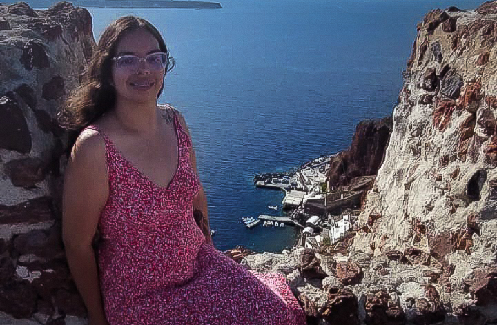

Yo soy Tania
Mis pasatiempos son escuchar música, leer, cocinar me gusta mucho hornear queques. Me encantan los animales, me gusta pasar tiempo con mi perrita, ver películas y salir a caminar.
Ella es Avellana. Es una perrita, zaguate, similar a un poodle, fue rescatada hace 7 años, lastimosamente perdió dos deditos de su patita trasera y parte de su cola, ella duro 6 meses en recuperación, mientras aprendía a caminar.

Tiene aproximadamente 11 años de edad, y la razón por la cual se llama Avellana es por el color de sus ojos, ella es una perrita muy inteligente, leal, amorosa, demasiado chineada, le teme a los truenos y a la lluvia, le encanta dormir, y comer especialmente pollito.